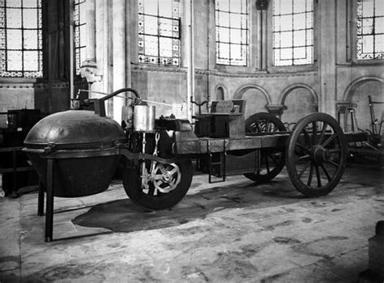
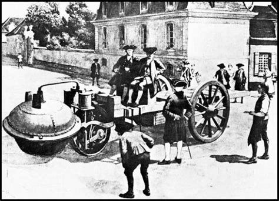
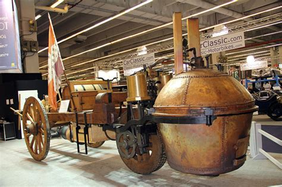
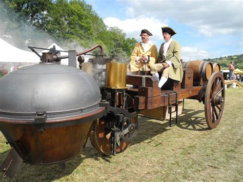
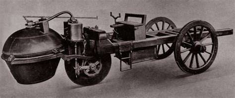
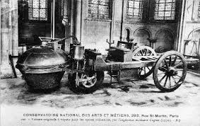
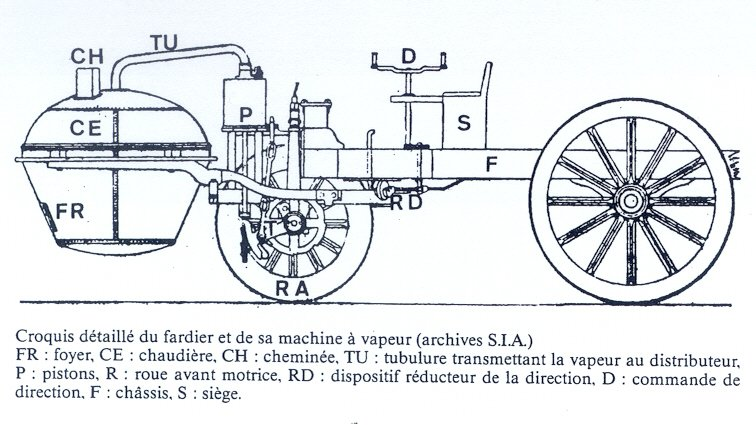
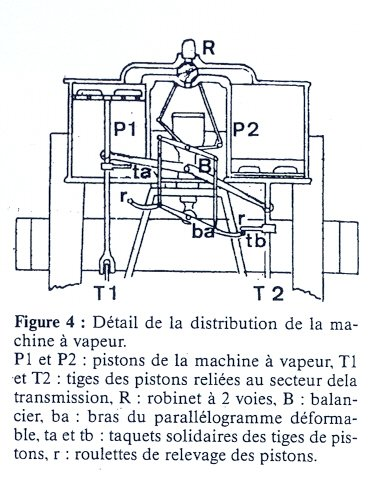

UNE REVOLUTION DE L'INDUSTRIE
MÉCANIQUE:
LA VOITURE SOLAIRE
I/DÉFINITION
Le substantif « automobile » est attesté vers 1890, mais son genre, aujourd'hui seulement féminin, est longtemps resté pour les linguistes un sujet ouvert. L'Académie française s'est prononcée dès 1901 pour le genre féminin, mais la polémique ne s'est éteinte que bien après, le masculin étant attesté ponctuellement jusqu'en 1944.Le principal but de cette partie ici est de savoir comment ont évolués les vehicules jusqu'a l'invention du véhicule solaire.Chose que nous verrons dans la partie suivante...Une automobile ou, plus précisément, une voiture automobile est un « véhicule automobile à roues propulsé par un moteur et destiné au transport terrestre de personnes, de leurs bagages et de petits objets.En effet L'automobile est un moyen de transport privé parmi les plus répandus. Sa capacité est généralement de deux à cinq personnes, mais peut varier de une à neuf places.L'usage limite l'emploi du terme automobile aux véhicules possédant quatre roues, de dimensions inférieures à celle des autobus et des camions, mais englobe parfois les camionnettes. Bien qu'étant des « véhicules automobiles », les motocyclettes ne sont pas habituellement classées dans cette catégorie. Le terme « automobile » est à l'origine un adjectif issu de la concaténation d'un préfixe grec, αὐτός (soi-même), et d'un suffixe latin, mobilis (mobile). Il a été créé lors de l'invention des premières « voitures sans chevaux » car elles étaient munies d'un moteur avec source d'énergie embarquée alors que les autres « voitures », diligences, calèches, carrioles, chariots et autres véhicules terrestres étaient mus par des animaux de trait (généralement des chevaux (hippomobiles) ou des bœufs).
II/La toute première automobile : à vapeur
La première ébauche d'un véhicule mobile a lieu en 1796 lorsque le Français Joseph Cugnot plaça une machine à vapeur à l'arrière d'une charrette : le fardier. Plusieurs tentatives furent opérées dans les décennies suivantes, toutes se basant sur la machine à vapeur. C'est sans doute lors de son service dans l'armée que Cugnot élabore son projet de fardier à vapeur. L'observation des énormes caissons à traction hippomobile servant au déplacement des pièces d'artillerie, la lourde intendance nécessaire à l'entretien des animaux, source de retard et de lenteur, suggère sans doute à Cugnot une solution visant à remplacer la traction hippomobile. Ce problème avait déjà été envisagé par son prédécesseur Denis Papin, qui a construit un bateau à vapeur dès 1707, ainsi que par Thomas Newcomen, créateur de la première machine à vapeur proprement dite. Néanmoins, ces inventions ont dû influencer Cugnot. Le véhicule se compose de deux parties principales : le moteur (foyer et chaudière), c'est-à-dire la marmite située à l'avant, énorme récipient sous pression, en cuivre, et le châssis, constitué de deux poutres longitudinales reliées par des traverses en bois, structure où doivent prendre place le conducteur et le chargement. La charge repose essentiellement sur les deux grandes roues arrière.S'agissant de la partie avant, tractrice, les idées de Cugnot sont déjà innovatrices : le « moteur » est constitué d'une machine à vapeur à deux cylindres verticaux, les pistons entraînant une unique roue motrice. La marmite alimente la machine à vapeur grâce à un système de transmission de vapeur d'eau sous pression. La machine entraînant la roue motrice par pistons est le prototype simplifié des locomotives à vapeur du siècle suivant.
Title






II/COMMENT FONCTIONNAIT T-ELLE
Le « chariot à feu » de Cugnot est le premier véritable et unique prototype de véhicule automobile capable de transporter son conducteur et une charge de l'histoire humaine, et c'est aussi la première machine à vapeur à rotation.Le fardier utilise un moteur dérivé de la machine de Thomas Newcomen pour faire tourner une roue motrice unique à l'aide de deux pistons transmettant l'énergie fournie par une chaudière à vapeur. La « marmite » contient une réserve d'eau portée à ébullition par un foyer à bois et la vapeur se transmet via un tuyau à deux pistons entraînant la roue dans un mouvement circulaire (machine dite « atmosphérique » de type Newcomen). Le véhicule dispose de quatre commandes : le frein, les poignées de direction (sorte de volant) qui agissent sur la roue motrice, une tringle reliée au robinet de vapeur et faisant office d'accélérateur, et deux cliquets inversant le mouvement à double effet des pistons pour engager la marche arrière.
Title


Demeuré à l'état de prototype, le fardier souffre de graves défauts de jeunesse. Tout d'abord la mise en œuvre est très longue : l'eau doit atteindre la température voulue ; puis le combustible se consume très rapidement. Les pauses pour recharger le moteur sont donc fréquentes : toutes les douze minutes environ. Le fardier, lorsqu'il est en côte, ne développe pas assez de puissance, du fait de la faible pression de la vapeur. Cugnot n'a pas résolu le problème du freinage, ce qui peut être fatal en descente : la simple pédale qui sert de frein est pratiquement inopérante dans ce cas. Enfin, la vitesse maximale, bien que constituant un succès technologique remarquable, reste néanmoins faible (entre 3,5 et 4 km/h) et permet tout juste de suivre une armée à pied. En dépit de son utilité certaine dans le transport de charges lourdes, le fardier de 1771 n'est donc pas, en l'état, capable de remplacer efficacement les chevaux.